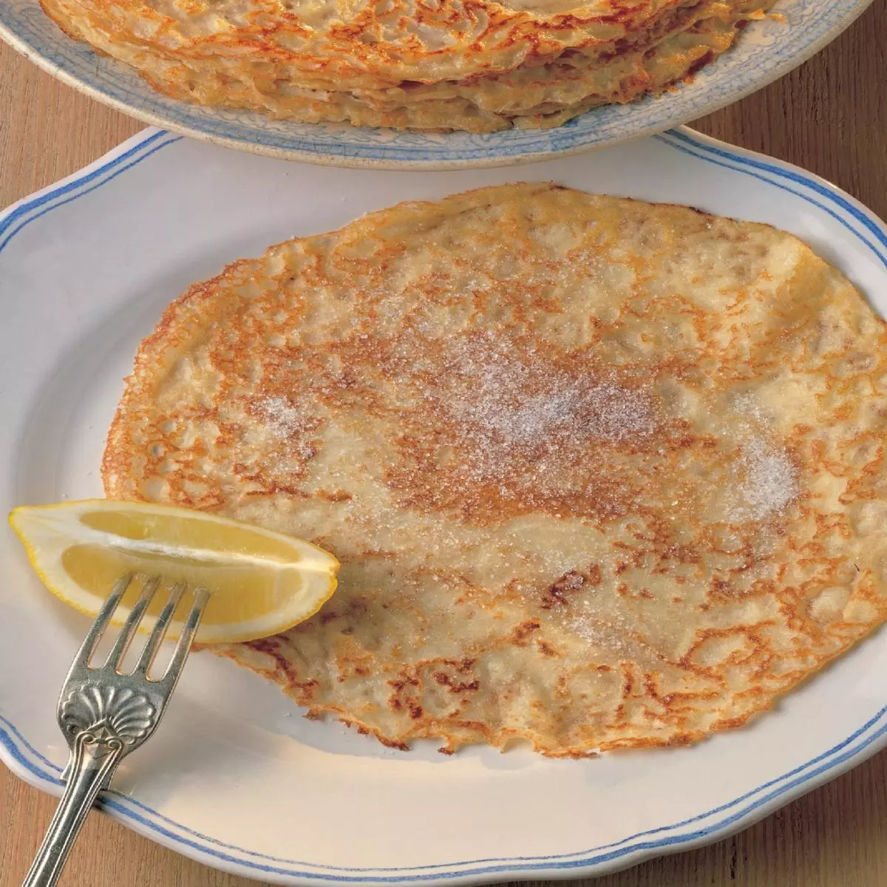

Quick and easy pancakes!

Description
These are the most delicious and easy to make pancakes in the world!
They only require a few ingredients and are extremely easy to make, even if cooking is not your strong point.
Ingredients:
- 2 eggs
- 1 cup of flower
- 1 cup of milk
- 7g of vanilla sugar
- More sugar if you like, but I prefer to not make them very sweet
Steps:
- Mix everything together, until it has a cream like consistency.
- Using a ladle, pour the mixture into a hot frying pan.
- Cook until brown on each side.
- Enjoy!